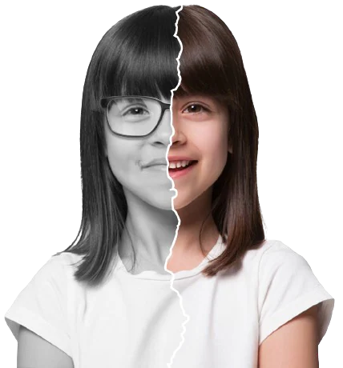
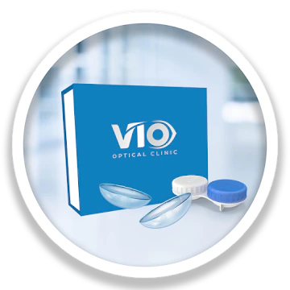

Mata Minus & Silinder Anak Naik Terus?

Udah coba berbagai cara tapi belum berhasil?
Terapi Mata Minus, Ortho-K solusinya!
Mata Minus & Silinder Anak Naik Terus?

Udah coba berbagai cara tapi belum berhasil?
Terapi Mata Minus, Ortho-K solusinya!
Terapi Ortho-K adalah terapi mata minus dengan lensa kontak yang dipakai saat tidur untuk membentuk ulang kornea mata tanpa harus mengikis kornea mata dengan operasi.

Bunda Aim, Influencer
"Bebas menggapai cita-cita, Aim sekarang bebas mata minus dari minus 3,75 berkat terapi ortho-K di VIO Optical Clinic."
Content Creator
"Capek berkacamata terus, akhirnya ikut Terapi ortho-K dari minus 2,25 sekarang jadi normal, thanks VIO!"
Pelajar
"Setelah berbagai cara dilakukan, akhirnya aku pakai terapi ortho-K. Hanya seminggu pakai, mata minus aku dari 11 turun hingga 5."

Kenapa harus Terapi Mata Minus Ortho-K di VIO Optical Clinic?

Dokter Optometri lulusan Cebu Doctor University Phillipine berpengalaman yang tersertifikasi dari Fellow American Academy of Optometry (FAAO) dengan spesialisasi di bidang Vision Therapy dan sudah diakui skala Internasional. Selain itu, beliau juga berkolaborasi dengan dokter spesialis mata.
Sertifikat Pencapaian

0817-1711-1143
©2026 | VIO Optical Clinic